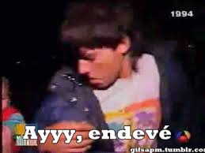

Bienvenid@ a la página web de la Universidad Autónoma de Canamunt. Aquí podrás encontrar toda la información
necesaria para empezar tus estudios con nosotr@s.
Historia
- La Universidad Autónoma de Canamunt es una de las más importantes universidades del sistema público mallorquín. Su emplazamiento, en el campus de Son Puig, a las afueras de la capital, y el hecho de que se encuentre muy cerca de algunas de las instalaciones del Consejo de Investigaciones Baleares (CIB) acentúan su carácter de universidad marcadamente investigadora.
- Autonomía y libertad: Están presentes desde los inicios de la institución, en 2013.
- Las instalaciones de Canamunt (un campus en unos terrenos que en total tienen más de 222.000 metros cuadrados de extensión) se unen a las de la Facultad de Medicina en la Ciudad Universitaria de Santa Catalina. Además, diversos centros adscritos se encuentran repartidos por varias zonas del Parc iTardeo.
Formadores ilustres
A lo largo de su historia, múltiples personalidades han pasado por la Universidad Autónoma de Canamunt, ya sea como docentes, conferenciantes o participantes en alguna actividad de la institución
- Torrente
- Risitas
- Niño del meshero


 Inicio
Inicio Info
Info Examen
Examen